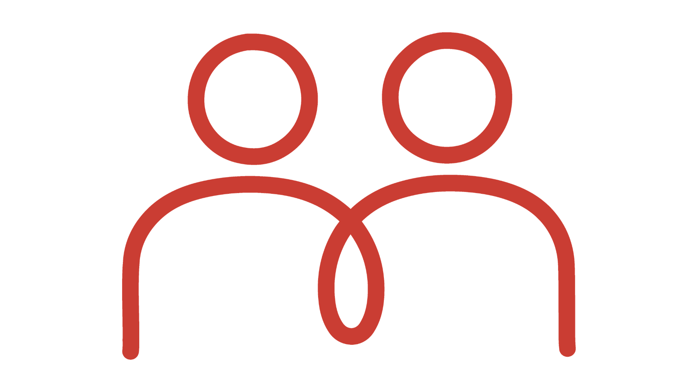
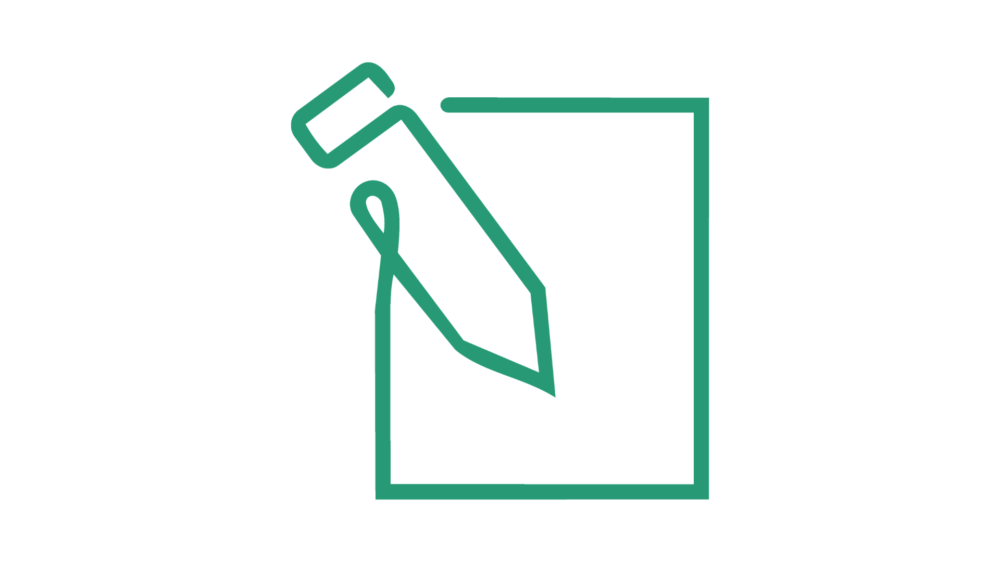
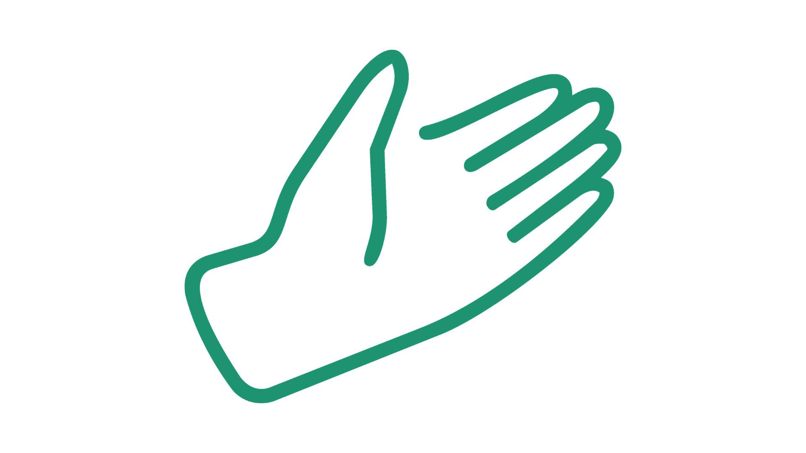
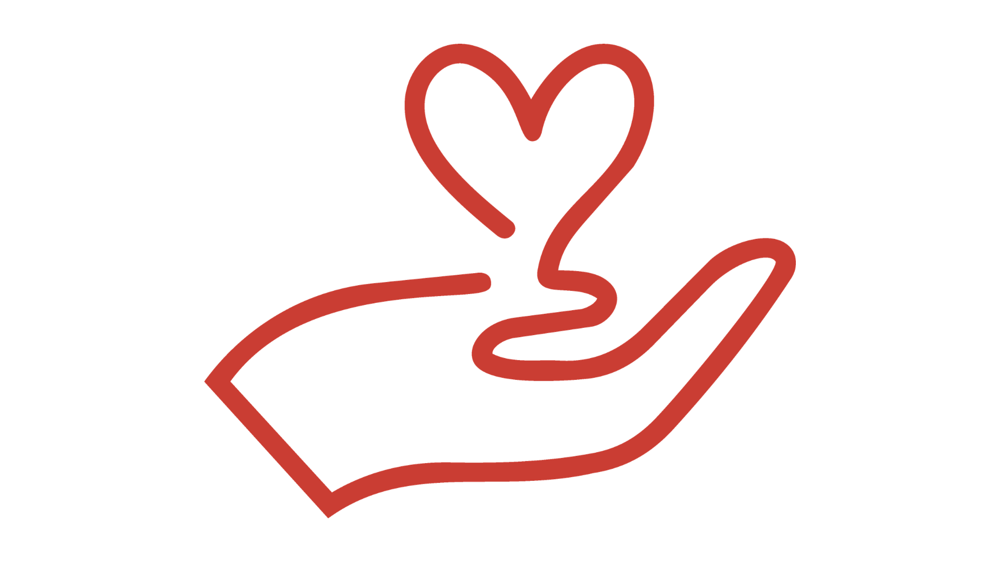

Princípio
Uma escola só amadurece quando as pessoas crescem junto com ela.
Maturidade que escala.
Desenvolvemos pessoas, estratégia e governança para o crescimento acontecer sem perder quem o sustenta.
Quem somos
A Nexara conecta pessoas, decisões e cultura, transformando desafios de gestão em estruturas claras, práticas e sustentáveis para toda a comunidade escolar.
Uma escola só amadurece quando as pessoas crescem junto com ela.
Transformar a forma como escolas organizam pessoas, liderança e crescimento no Brasil.
Arquitetar o ecossistema humano que sustenta o crescimento e a evolução da escola.
Princípios
Cuidar de quem sustenta a escola é o que sustenta o crescimento.
Boas intenções precisam de estrutura, ferramentas e critérios claros.
O melhor trabalho é o que deixa a escola capaz de operar o que foi construído.
Toda decisão começa com diagnóstico, evidência e leitura de contexto.
Uma cultura forte nasce de relações em que as pessoas se reconhecem e participam.
Agir no que está por trás do problema, não apenas no que aparece.
O custo de não agir
Operar sem estrutura sai caro em horas, turnover e evasão. A NR-1 já prevê penalidade para risco psicossocial não gerenciado.
Soluções
Diagnóstico, desenho e implantação de estruturas para pessoas, cultura, liderança e governança.
Acompanhamento próximo para dirigentes e lideranças transformarem intenção em decisão e rotina.
Encontros que mobilizam educadores, famílias e gestores em torno de desafios humanos reais.
O ecossistema humano
Quando uma dimensão se desequilibra, toda a escola sente. Quando uma se fortalece, as outras se beneficiam. A Nexara estrutura as três, de forma integrada e com método proprietário.
Pessoas, estratégia e governança em uma só engrenagem.
Professor, colaborador, família e aluno conectados.
Instrumentos proprietários para transformar intenção em rotina.




O que muda quando a Nexara atua
Pesquisa Nacional 2026
O que sustenta uma escola também precisa ser medido.
O que sustenta uma escola também precisa ser medido. Conheça o estudo e participe da leitura nacional sobre pessoas, relações e estrutura humana escolar.

Fundadora
Mais de 25 anos em transformação organizacional e 15 anos dedicados ao setor educacional.
Criada por Elizabeth Loureiro, executiva, com experiência em gestão de pessoas, estratégia e desenvolvimento de lideranças em empresas nacionais e multinacionais. Hoje, como arquiteta de ecossistemas humanos, ajuda escolas a olhar para pessoas, relações, gestão e crescimento de forma integrada, fortalecendo uma gestão mais humana, estratégica e sustentável.
Projetos de liderança, cultura, estrutura organizacional, cargos e salários, desenvolvimento de pessoas, governança, estratégia e ESG aplicados à realidade organizacional e ao dia a dia das escolas.
Graduação em Administração de Empresas, pós-graduações em Gestão de Pessoas (FAAP) e em Jornada do Cliente e Metodologias Ágeis (PUC-PR), com formações executivas em Liderança (Fundação Dom Cabral), Transformação Digital (FGV) e Business Partner (Insper).
"Escola madura não é a que mais cresce. É a que cresce sem perder quem faz o crescimento acontecer."
Casos de campo
+7 p.p. de evolução percebida.
+9 p.p. de evolução percebida.
+9 p.p. de evolução percebida.
Insights
Decisões, relações e cultura aparecem juntas na experiência de quem vive a instituição.
Ler post no LinkedIn ↗A família percebe, o aluno sente e a liderança recebe mais problemas.
Ler post no LinkedIn ↗Maturidade é transformar crescimento em estrutura, clareza e autonomia.
Ler post no LinkedIn ↗Escolas que estruturam seu ecossistema humano não dependem de heroísmo diário. Dependem de método, clareza e lideranças preparadas.